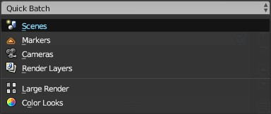

Quick Batch¶
The Quick Batch menu lets you create batches automatically based on certain rules. This system replaces the old autogenerate operator.
Scenes¶
Create a render job for each scene in the blend file.
Markers¶
Use markers to create render jobs with specific frame ranges.
You can make render jobs animations by toggling the Animation checkbox. No matter what option you choose, Custom frame range and the Still frame settings will always be set to the marker.
This batch will create a job for each marker with a custom frame range that starts from the previous marker (or the beggining of the animation), up to the next marker (or the end of the animation). If you don’t use animations it will simply be a still frame for each marker.
| Setting | Description |
|---|---|
| Scene | Scene to use for render jobs |
| Use all Scenes | Use all scenes instead of the selected one |
| Animation | Make all render jobs animations |
| Don’t set cameras | Leave the camera field blank in render jobs |
Cameras¶
Create an image render job for each camera.
| Setting | Description |
|---|---|
| Scene | Scene to use for render jobs |
| Use all Scenes | Use all scenes instead of the selected one |
Render Layers¶
Create a render job for each render layer. Only render layers that are enabled are used.
| Setting | Description |
|---|---|
| Scene | Scene to use for render jobs |
| Use all Scenes | Use all scenes instead of the selected one |
Color Looks¶
Create a render job for each color look. This is useful to test different styles quickly.
Color looks are artistic effects that emulate different film types. The color looks can be found in the Color Management panel, in the scene settings tab.
Read more about Color looks in the Blender manual
This batch uses the Custom Overrides system to change the looks.
| Setting | Description |
|---|---|
| Width | Width of the render |
| Height | Height of the render |
| Output Path | File path for renders (the color look name will be added to it). |
Large Render¶
Divides the image in smaller tiles, creating a render job for each tile.
This batch uses the section setting of the Render tab to render only a portion of the image. This way you can subdivide a large image into smaller and more manageable images that can be rendered individually.
You can stitch the images together using a image editor like Krita , GIMP or Adobe Photoshop. If you use the “Open as layers” option in GIMP the image will come together automatically.
You can divide a render to up to 10 tiles horizontally and vertically. For instance, this means a 19,200x10,080px image would be rendered in 100 render jobs of 1920x1080 px.
| Setting | Description |
|---|---|
| Horizontal Tiles | Number of horizontal (x axis) divisions |
| Vertical Tiles | Number of vertical (y axis) divisions |
| Output Path | File path for renders (the tile’s X/Y will be added to it). |